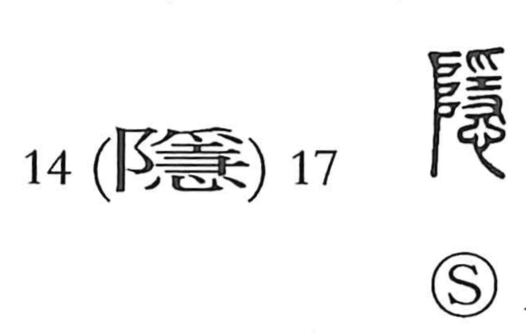

隠

Kun: kakusu, kakureru, hisoka | On: in
to hide ・ to conceal ・ to be hidden ・ secret
Explanation
Originally written 隱, this is a picto-phonetic character with in as its phonetic. It portrays a worshiper holding a ritual curse implement in both hands—the upper hand indicated by 爪 and the lower by 又—offering a secret prayer before 阜, understood as the divine ladder by which the gods ascend and descend. From this scene of god-facing concealment arises the core sense of hiding and keeping things secret, and by extension acting discreetly so that no one knows.